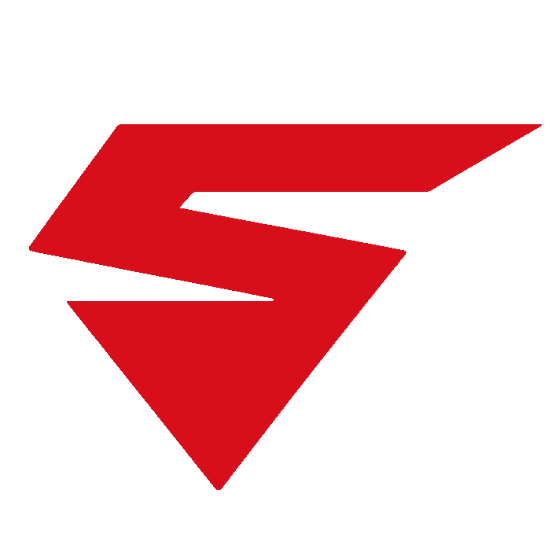
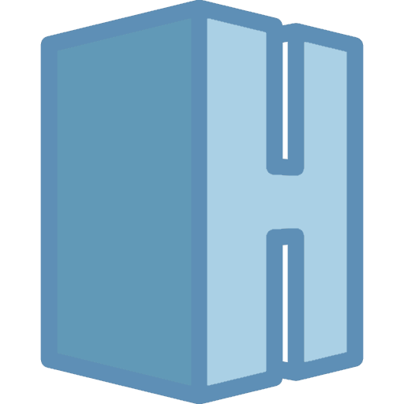

Deux jeux, un launcher, aucun superflu. Matt Games conçoit ses jeux et les distribue via son propre launcher, sans compte ni détour.
Deux jeux, deux univers différents. Les deux se lancent depuis le Matt Games Launcher.

Stratégie — chaque décision modifie l'équilibre du système.

Simulation — construisez et gérez une maison, sans chronomètre.
Une bibliothèque, des mises à jour simples, rien de superflu. Version 1.0 disponible pour Windows.